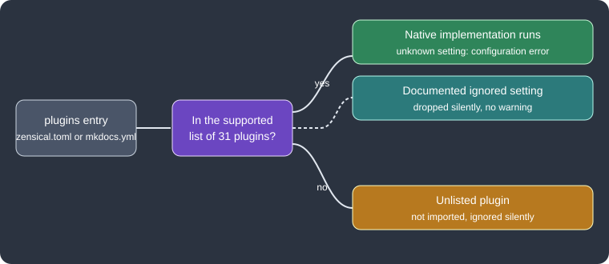

Blog, Tags and Plugins
|
This content was generated with the assistance of AI and should be verified against the official documentation before being relied on in production. |
Zensical does not load MkDocs plugins. It re-implements the most used ones in its own core, so the blog, the tags and a
list of other features are enabled through the same plugins setting that Material for MkDocs users know, but they run
natively. This page was written against Zensical 0.0.72 (the latest release on PyPI) and checked on 2026-10-26. The
examples add a blog and tags to Pocket Units, a tiny units-conversion library for C# and Python, and were built with
Zensical 0.0.72 on Python 3.13.
What a plugin is in Zensical
In MkDocs a plugin is a Python package that hooks into the build. Zensical runs in a Rust core and does not execute
arbitrary MkDocs plugins or expose the MkDocs plugin API. Instead, the project lists the plugins it implements natively
on its compatibility page, and a separate Module API is planned for extensions in the future. A plugin is enabled in
zensical.toml with a table named [project.plugins.<name>], or in mkdocs.yml with the usual plugins: list. The
configuration page describes the file formats.

The figure summarises how an entry of the plugins setting is treated. Everything outside the supported list is dropped without a message, which is the main pitfall when migrating.
Native blog
The blog is a native port of the blog plugin of Material for MkDocs. It reproduces that plugin’s configuration and behaviour, so the Material documentation remains the reference for detailed options. The Zensical documentation states that more flexible blogging functionality designed for Zensical is planned. The plugin offers posts, archives, categories, author profiles and pagination. No extra Python package is needed.
Folder layout
Posts live in docs/blog/posts/ (nested folders are allowed) and the blog entry point is docs/blog/index.md. Authors
are described in docs/blog/.authors.yml. The URL of a post is computed from its title, date and the configured URL
format, not from its source path.
docs/
index.md
tags.md
blog/
index.md
.authors.yml
posts/
release-1-0.mdWith automatic navigation nothing else is required. With an explicit nav, add only the blog entry point, never the
individual posts.
Enabling the blog
The following zensical.toml enables the blog and the tags plugins for Pocket Units. The options blog_dir,
post_date_format, post_url_format, post_excerpt, pagination_per_page, archive and categories are options of
the Material blog plugin; they were accepted by Zensical 0.0.72. The table some-unknown-plugin demonstrates a plugin
that Zensical does not know.
[project]
site_name = "Pocket Units"
site_url = "https://example.org/pocket-units/"
nav = [
{ "Home" = "index.md" },
{ "Blog" = "blog/index.md" },
{ "Tags" = "tags.md" },
]
[project.plugins.blog]
blog_dir = "blog"
post_date_format = "long"
post_url_format = "{date}/{slug}"
post_excerpt = "optional"
pagination_per_page = 5
archive = true
categories = true
[project.plugins.tags]
[project.plugins.some-unknown-plugin]
anything = "is silently ignored"
[project.extra.tags]
Python = "python"
CSharp = "csharp"
[project.theme.icon.tag]
python = "fontawesome/brands/python"
csharp = "fontawesome/solid/code"
default = "fontawesome/solid/tag"Source: Zensical docs: Setting up a blog
Posts, authors and excerpts
Every post needs a date (a single value, or created and updated). Other front matter keys are categories and
authors (identifiers from .authors.yml), links for related links in the post sidebar, and draft: true. A draft is
shown in preview but excluded from normal builds. Content before the <!-- more --> separator is the excerpt shown in
blog views; without a separator the whole post is used unless excerpts are required.
---
date: 2026-10-01
authors:
- alberto
categories:
- Releases
tags:
- Python
---
# Pocket Units 1.0
The first stable release converts lengths between meters and feet.
<!-- more -->
Details of the release follow here.authors:
alberto:
name: Alberto
description: Maintainer
avatar: https://example.org/avatar.pngSource: Zensical docs: Setting up a blog
A second post with draft: true was added to the test project. The build produced these blog files, and the draft was
absent from the output:
site/blog/index.html
site/blog/2026/10/01/pocket-units-10/index.html
site/blog/archive/2026/index.html
site/blog/category/releases/index.htmlThe index page shows the excerpt of the post only, while the post page contains the full text. Posts can link to each other by source path and assets beside posts are moved to the generated blog assets directory. Archive, category and author pages list their posts in chronological order, and the index is paginated.
Native tags
The tags plugin is the native version of the Material tags plugin. Add a tags list to the front matter of any page;
the tags are shown at the bottom of the page and can be used to filter search results. A page can hide its tags by
adding tags to its hide front matter list.
---
tags:
- Python
- CSharp
---
# Pocket Units
A tiny units-conversion library.Tag icons are optional. The table extra.tags maps a tag to an identifier (letters, digits, dashes and underscores
only) and theme.icon.tag assigns an icon to each identifier, with default as the fallback; several tags may share
one identifier. The configuration above does exactly this. A listing page is created with the marker used by the
Material plugin:
# Tags
<!-- material/tags -->Source: Zensical docs: Tags
The build rendered the tags of the home page as md-tag--python and md-tag--csharp elements and a tag listing page
at site/tags/index.html. The Zensical page does not describe the listing syntax; it refers to the Material
documentation for listings and advanced settings. The legacy tag settings tags_compare, tags_compare_reverse,
tags_pages_compare, tags_pages_compare_reverse, tags_file, tags_extra_files, export, export_file and
export_only are ignored, and custom callables are unsupported. A build with tags_compare_reverse = true completed
without a message.
Supported plugins
According to the compatibility page, 31 plugins are implemented natively. Settings that are documented as ignored are dropped silently, with no value validation or warnings.
| Plugin | Notes on differences |
|---|---|
|
API pages and navigation through mkdocstrings. |
|
Configured as |
|
Configured as |
|
Cross-references with |
|
Per-directory |
|
Posts, archives, categories, authors, pagination. Custom Python callables are unsupported; built-in strategies only. |
|
Obsidian-style callouts as admonitions. Ignores |
|
Excludes paths by glob (globset syntax) or regex relative to |
|
GitHub-style alerts as admonitions. |
|
Image lightbox. Ignores |
|
Converts include tags to Snippets. Per-inclusion arguments, globs, |
|
Navigation from |
|
Generates |
|
Jinja and Python macros. A new environment per page; only |
|
Executes fenced code blocks. Install |
|
Jinja rendering in Markdown and titles. Data outside the project root is skipped. |
|
Shared front matter through |
|
Versioning. Requires a compatible fork; ignores |
|
Minifies HTML, JS and CSS. |
|
API documentation from source. Install |
|
Configured as |
|
Makes search work when the site is opened from the file system. |
|
Self-hosts external assets and annotates external links. The cache format differs from Material. |
|
Redirect maps, with anchor-based redirects for moved sections. |
|
RSS and JSON feeds. Ignores |
|
Social cards and Open Graph metadata. |
|
Enabled by default even if unlisted. Only |
|
Built in natively; the entry can stay in shared configuration but is ignored. |
|
Embeds data files as tables. All files must be inside the project. |
|
Native tags, with the legacy settings listed above ignored. |
|
Configured as |
Source: Zensical compatibility: Plugins
The search plugin is covered in Search, the mkdocstrings family in
API Docs with mkdocstrings and mike in
Versioning and i18n.
Unsupported, planned and in-progress plugins
| Plugin | Status | Alternative |
|---|---|---|
|
Unsupported |
Use |
|
Unsupported |
Add its JavaScript with |
|
Planned |
None yet. |
|
Planned |
None yet. |
|
Planned |
None yet. |
|
In progress |
None yet. |
Source: Zensical compatibility: Plugins
Silently ignored plugins
Configuration for a plugin that is not in the supported list is ignored without any message: Zensical neither imports
nor runs it. The test project above contains some-unknown-plugin and built with the output No issues found. A
migrated mkdocs.yml that lists, for example, a custom or third-party plugin therefore builds, but the feature is
missing from the site. Compare the plugin list with the tables above before trusting a migrated build.
The opposite case is strict: a supported plugin rejects a setting it does not know. Adding bogus_setting = 1 to
[project.plugins.blog] stopped the build with a Python traceback that ended with this line:
ValueError: invalid plugins.blog.bogus_setting: is not a supported optionSource: Zensical compatibility: Plugins
Settings listed as ignored for a supported plugin are different: they are accepted and dropped, for example the legacy
tags_compare_reverse.
Pitfalls and version notes
-
Zensical is in alpha at 0.0.72; the plugin list grows with releases, so check the compatibility page again after an upgrade.
-
Build hooks and the MkDocs plugin API are not available. The page on migrating from Material for MkDocs lists the other gaps.
-
The blog is a port of the Material for MkDocs blog, which is in maintenance mode; Zensical-specific blogging is planned but not yet documented.
-
Custom Python callables (blog strategies, tag sorting) are unsupported.